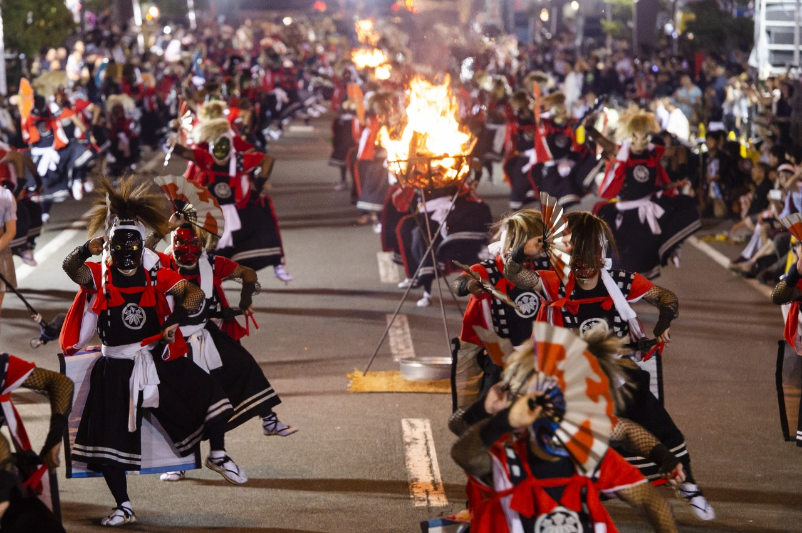

北上市は民俗芸能の宝庫と言われ、伝承活動をしている民俗芸能団体数は日本有数です。８月の 第一金曜から三日間開催される「北上・みちのく芸能まつり」では、街のあちこちで１００を越す民俗芸能が披露 されます。
約500ｍの道路を8つの会場に分け、100団体を超える民俗芸能を鑑賞することが出来ます。
その中でもフィナーレを飾る「鬼剣舞大群舞」では、かがり火を灯して200人の踊り手が一斉に「一番庭」と「刀剣舞の狂い」の２演目を披露します。かがり火に浮かぶ鬼剣舞は、一層激しく荘厳さを増し、その光景は圧巻です。